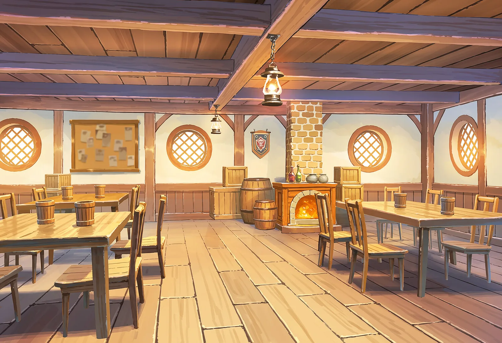

ISEKAI TENSEI SHINDAN
異世界転生診断

29個の質問に答えると、あなたの性格から
「異世界に転生したらどんな職業になるか」を診断します。
診断結果は、異世界転生ガチャに登場するキャラクターの中から選ばれます。
本診断は心理学のBig Five理論の構成を参考にした独自の簡易診断であり、学術的な性格検査ではありません。
結果はエンタメ目的でお楽しみください。
よくある質問
異世界転生診断とはどんな診断ですか？
29個の質問に答えると、あなたの性格から「異世界に転生したらどんな職業になるか」がわかる無料の簡易診断です。心理学のBig Five理論の構成を参考にした独自の診断で、学術的な性格検査ではありません。
何問ありますか？所要時間はどれくらいですか？
全29問で、キャラクターが1問ずつ話しかけてくるRPGの会話のような形式で答えていきます。所要時間は約3分です。
診断結果はどうやって決まるのですか？
回答から算出した5つの性格因子のスコアをもとに、最も近い性格のキャラクターが55通りの中から選ばれます。結果ページでは因子ごとのランクやキャラクターからのコメントも見られます。
異世界転生ガチャとはどんな関係がありますか？
診断結果は、姉妹サイト「異世界転生ガチャ」に登場するキャラクターの中から選ばれます。ただし診断結果とガチャで実際に引けるキャラクターは連動しておらず、ガチャは完全ランダムの抽選です。
診断結果はシェアできますか？
結果ページの「結果をシェアする」から、キャラクターと二つ名を含む画像付きでSNSに共有できます。共有されたリンクを開くと、同じ結果をそのまま確認できます。
Q1
―
異世界転生診断
あなたの転生キャラは
ランクは特性の強さを表すものであり、優劣ではありません。
あなたの結果
あなたの性格を一言で表すと
―
異世界には他にもいろいろなキャラがいます
ガチャで運試ししてみませんか？
シェアすると結果のURLも一緒に共有されます